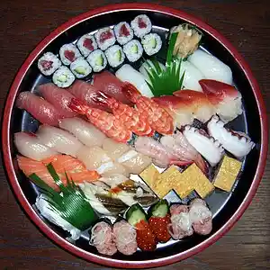
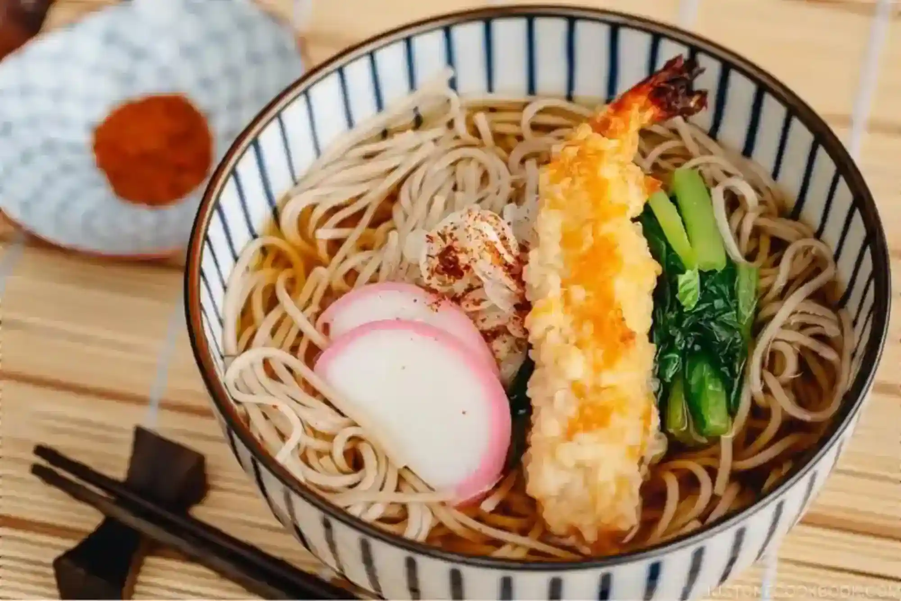
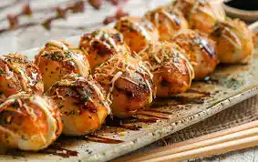
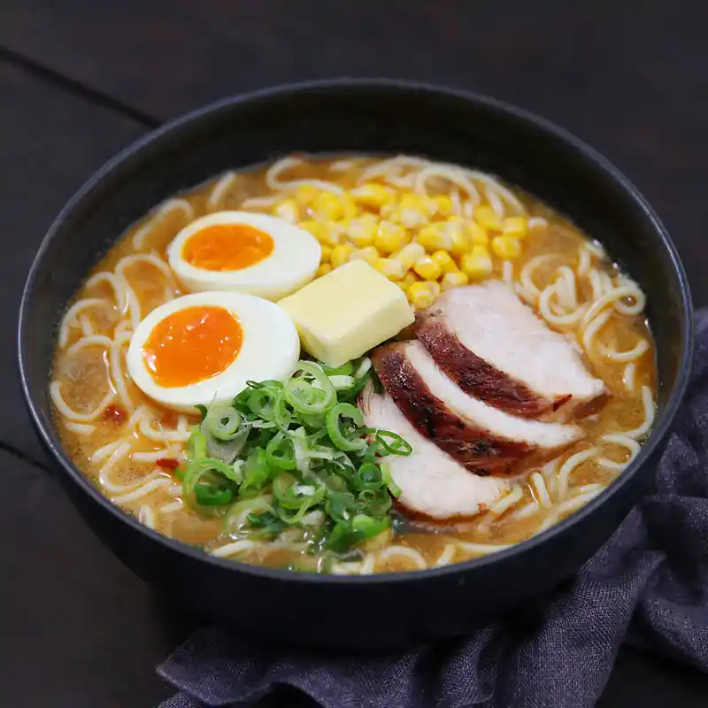

Food
Savor the essence of Japan with a culinary journey, from exquisite sushi to comforting ramen, each dish a reflection of regional flavors and age-old techniques.
Sushi

| Description |
|---|
| Sushi is one of the all-time favourite and well-known Japanese foods around the world. It is served in various ways and prices. One example is the entertaining Kaiten-zushi also know as conveyor belt sushi, where customers can enjoy sushi for a reasonable price. Sushi is a dish of slightly sweet, vinegared rice often paired with a piece of raw fish or shellfish, called a neta, on top. It is typically enjoyed with soy sauce and wasabi to enhance the flavour. There are 6 different types of sushi which are Sashimi, Nigirizushi, Makizushi, Uramakizushi, Temakizushi and Chirashizushi. Sashimi is thinly sliced fish or meat, often served raw paired with sauces like ponzu and soy sauce. Nigirizushi is a pillow of vinegared rice with a topping of raw or cooked seafood. Makizushi is vinegared rice and fillings layered with a sheet of seaweed. Uramakizushi is rolled sushi with rice on the outside and nori on the inside. Temakizushi is a large seaweed cone stuffed with rice, fish and other sushi fillings. Chirashizushi features a bed of sushi rice covered with toppings. |
Soba

| Description |
|---|
| Soba is a noodle dish which is made from buckwheat flour or a mixture of buckwheat and wheat flour. It is first made in China over 6,000 years ago but were popularized in Japan during the Edo period. The noodles are about as thick as spaghetti and are served either hot or cold with various kinds of toppings. In Japan, soba noodles can be found at fast food venues to high end specialty restaurants. |
Takoyaki

| Description |
|---|
| Takoyaki are octopus-filled wheat batter balls hail from Osaka, invented by a street vendor in the 1930s. The ball shape of the takoyaki is achieved by using a specialized pan with half-sphere indents across its surface. The traditional style of takoyaki comes with topping such as dried bonito flakes, dried seaweed flakes and a special takoyaki sauce. |
Ramen

| Description |
|---|
| Ramen is a Japanese noodle soup and it is originally adapted from Chinese wheat noodle soup. There are 4 types of broth styles which are Shio, Shoyu, Miso and Tonkotsu. Firstly, Shio is a clear or pale broth which is usually paired with chicken, fish or vegetables and is the lightest broth style. Secondly, Shoyu is a salty and sweet flavoured broth and is the oldest broth style which is made from a mix of chicken or vegetable stock and soy sauce. There is aso miso which is one of the newer additions to ramen and creates a separate and complex taste of the broth. Tonkotsu takes on a slightly different taste as it is made from boiling pork bones. Ramen has a varient of toppings which include chashu which are slices of roasted or braised pork, kamaboko which are steamed fish cakes, marinated egg also known as tamago, naro or seaweed, menma which are seasoned bamboo shoots and corn. |